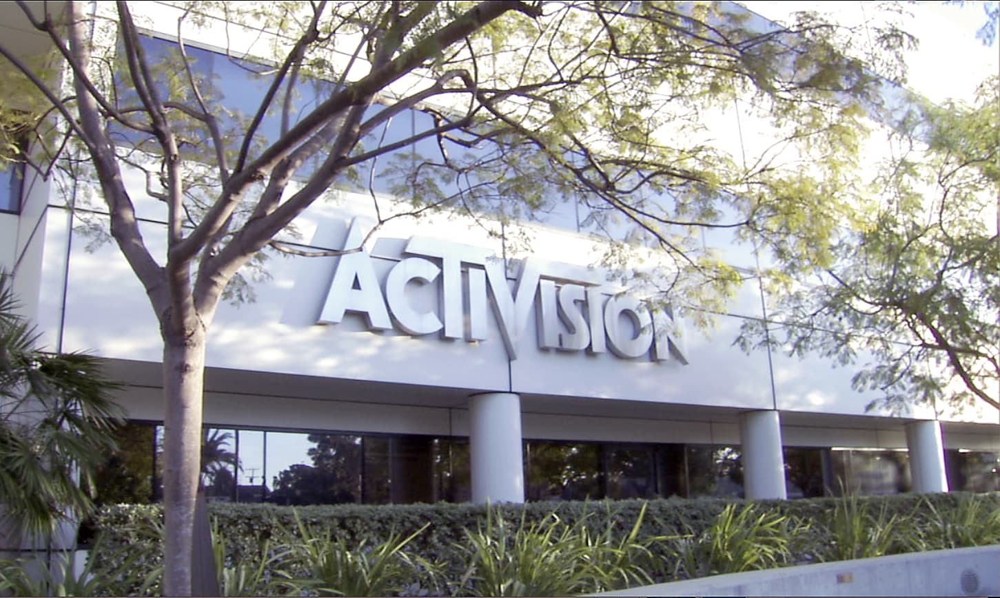

About Us

Activision Publishing, Inc. is an American video game publisher based in Santa Monica, California. It serves as the publishing business for its parent company, Activision Blizzard, and consists of several subsidiary studios. Activision is one of the largest third-party video game publishers in the world and was the top United States publisher in 2016.
The company was founded as Activision, Inc. in October 1979 in Sunnyvale, California, by former Atari game developers, upset at how they were treated at Atari, to develop their own games for the popular Atari 2600 home video game console. Activision was the first independent, third-party, console video game developer. The 1983 video game crash, in part created by too many new companies trying to follow in Activision's footsteps without the expertise of Activision's founders, hurt Activision's position in console games, forcing them to diversify into games for home computers, including the acquisition of Infocom. After a management shift, with CEO Jim Levy replaced by Bruce Davis, the company renamed itself as Mediagenic and branched out into business software applications. Mediagenic quickly fell into debt, and the company was bought for around US$500,000 by Bobby Kotick and a small group of investors around 1991.
Kotick instituted a full rework of the company to cover its debts: dismissing most of its staff, moving the company to Los Angeles, and reverting to the Activision name. Building on existing assets, the Kotick-led Activision pursued more publishing opportunities and, after recovering from the former debt, started acquiring numerous studios and intellectual properties over the 1990s and 2000s, among these being the Call of Duty and Guitar Hero series. A holding company was formed as Activision's parent company to manage the internal and acquired studios. In 2008, this holding company merged with Vivendi Games (the parent company of Blizzard Entertainment) and formed Activision Blizzard, with Kotick as its CEO. Within this structure, Activision serves to manage numerous third-party studios and publish all the parent company's games outside those created by Blizzard.
The company was founded as Activision, Inc. in October 1979 in Sunnyvale, California, by former Atari game developers, upset at how they were treated at Atari, to develop their own games for the popular Atari 2600 home video game console. Activision was the first independent, third-party, console video game developer. The 1983 video game crash, in part created by too many new companies trying to follow in Activision's footsteps without the expertise of Activision's founders, hurt Activision's position in console games, forcing them to diversify into games for home computers, including the acquisition of Infocom. After a management shift, with CEO Jim Levy replaced by Bruce Davis, the company renamed itself as Mediagenic and branched out into business software applications. Mediagenic quickly fell into debt, and the company was bought for around US$500,000 by Bobby Kotick and a small group of investors around 1991.
Kotick instituted a full rework of the company to cover its debts: dismissing most of its staff, moving the company to Los Angeles, and reverting to the Activision name. Building on existing assets, the Kotick-led Activision pursued more publishing opportunities and, after recovering from the former debt, started acquiring numerous studios and intellectual properties over the 1990s and 2000s, among these being the Call of Duty and Guitar Hero series. A holding company was formed as Activision's parent company to manage the internal and acquired studios. In 2008, this holding company merged with Vivendi Games (the parent company of Blizzard Entertainment) and formed Activision Blizzard, with Kotick as its CEO. Within this structure, Activision serves to manage numerous third-party studios and publish all the parent company's games outside those created by Blizzard.